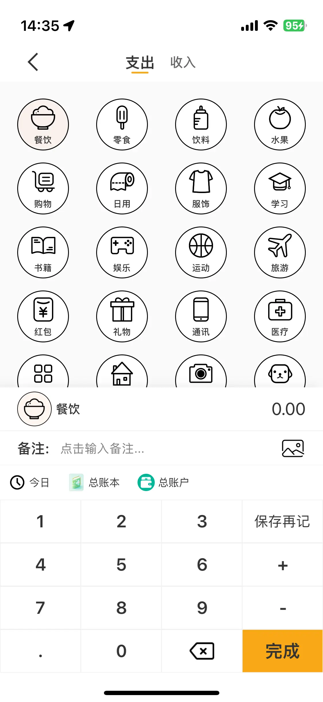

手动记账
手动记账作为最为常见也是最为基础的功能，软件提供了丰富的账单设置字段，交互页面清晰简约

账单设置
软件支持 分类、金额、日期、账本、账户、附件、备注
附件附件只会保存在本地，更换设备后附件不会同步到新设备上。
手动记账作为最为常见也是最为基础的功能，软件提供了丰富的账单设置字段，交互页面清晰简约
软件支持 分类、金额、日期、账本、账户、附件、备注
附件附件只会保存在本地，更换设备后附件不会同步到新设备上。